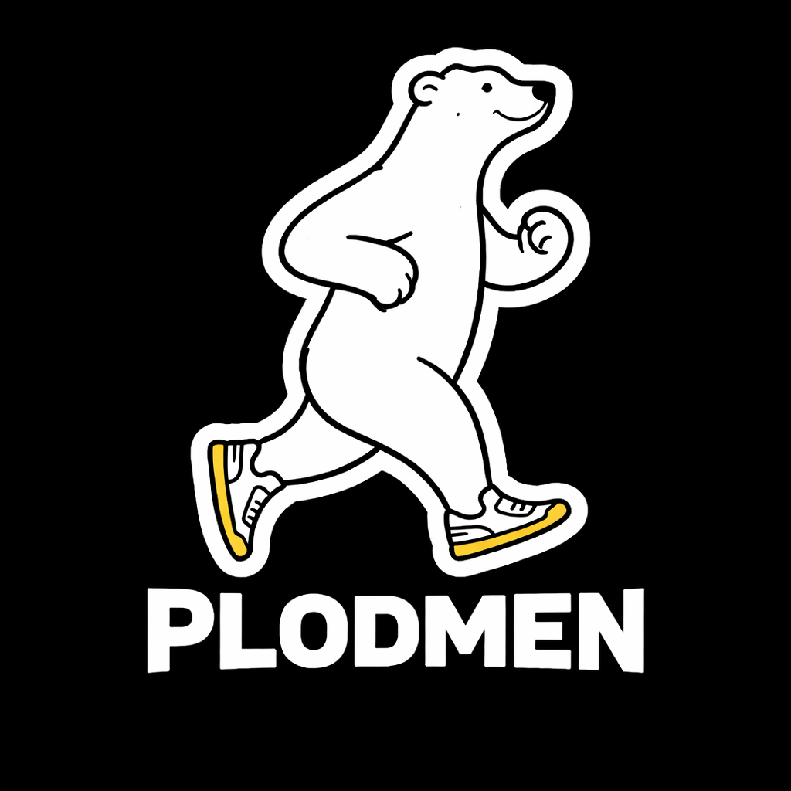

Prestwich's premier medium-effort running collective.
Neither fast nor furious. Just a loose association of people who occasionally run, frequently complain about hills, and strongly believe every jog should end near a café or pub.
Begin Your Gentle Athletic JourneyFounded after several people reluctantly agreed that running feels marginally more bearable in company, the Prestwich Plodmen are dedicated to steady movement, exaggerated weather complaints, and celebrating “personal bests” with absolutely no verification.
| Day | Activity |
|---|---|
| Tuesday | Conversational 5k (mainly gossip) |
| Thursday | Intervals* *Not medically verified intervals |
| Saturday | Long run / accidental bakery stop |
| Sunday | Recovery walk while claiming it counts |
Complaints about hills
Rain survival rate
Confirmed runner's highs
Excuses for skipped sessions
“Thought I'd get fitter. Mainly gained strong opinions about socks.” — Dave, age undisclosed
“Nobody judges your pace. They do judge your post-run pastry choices.” — Sandra
“Accidentally joined. Still here because someone brings flapjacks.” — Anonymous Plodman
Membership is entirely unofficial, emotionally supportive, and loosely organised. If you've ever slowed to walking and called it interval training — you're one of us.